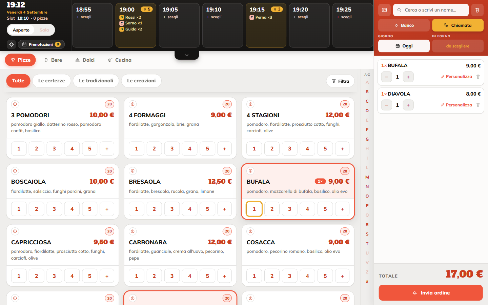
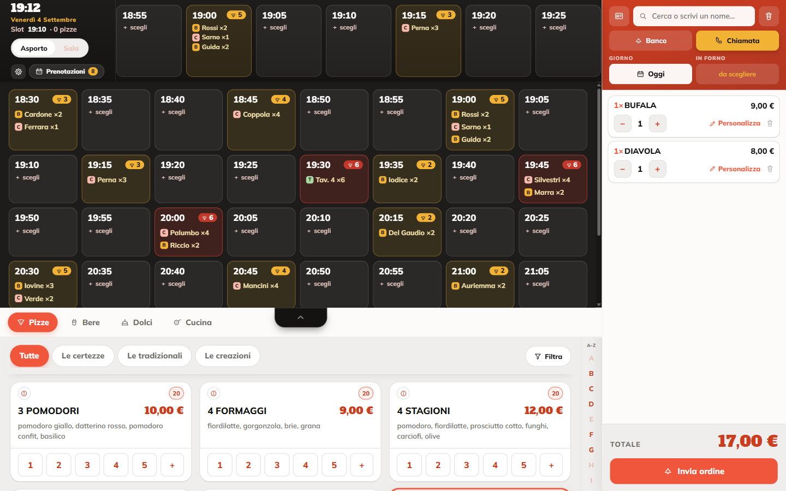
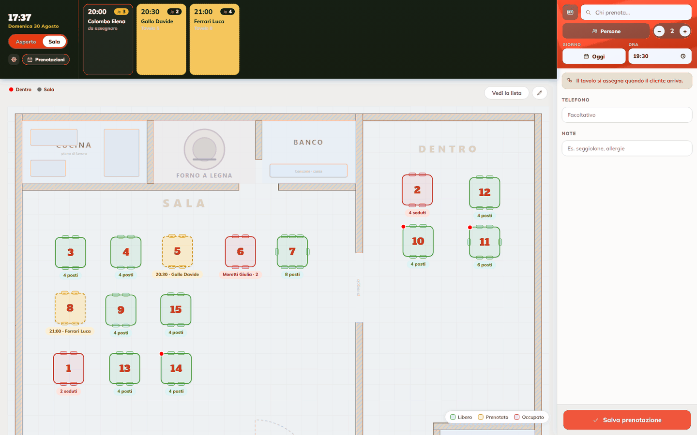
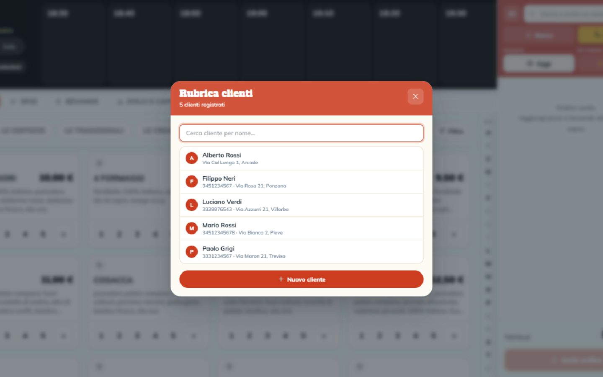
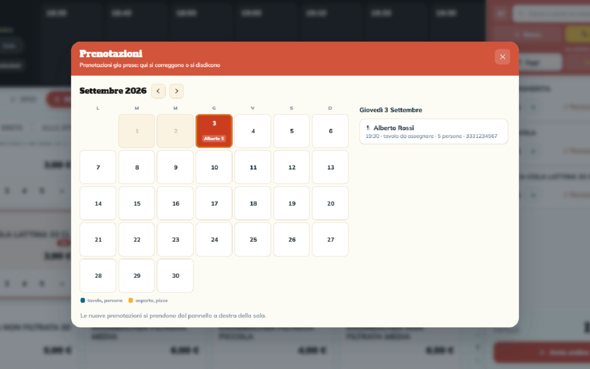
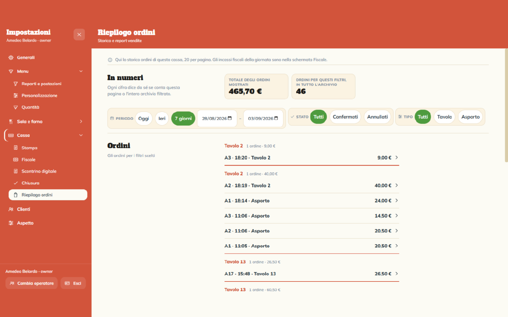
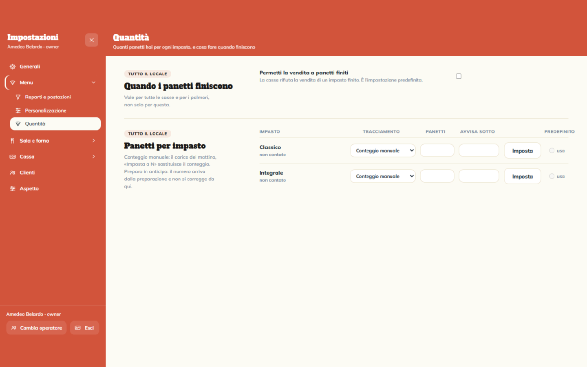
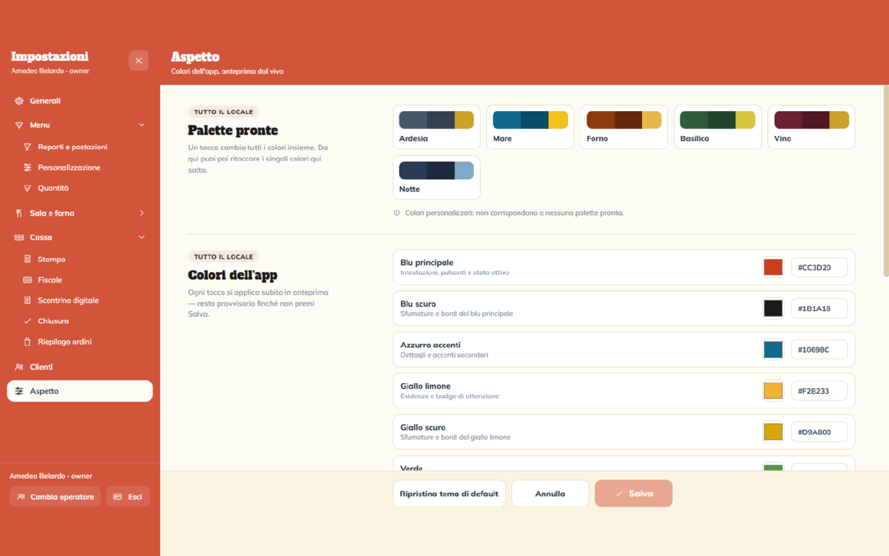
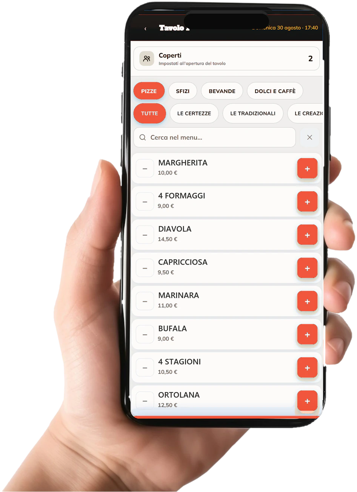

Magazzino al grammo e food cost190 € l'anno + IVA
È il passo oltre le scorte comprese nel piano base: ogni piatto venduto scarica gli ingredienti al grammo, e vedi quanto costa di materia prima ogni voce del menù e quanto margine lascia.
Prende le comande al banco, al telefono e ai tavoli e le manda in cucina.








Si tolgono ingredienti, si raddoppiano, si fa mezza e mezza, si sceglie l'impasto e la cottura, si scrive una nota per la cucina. Tutto dalla schermata dell'ordine, senza aprire altro.
Ogni fascia ha un tetto di ordini che decidi tu: quando è piena, l'ordine va nella prima libera, e se serve la forzi. Gli asporti si prenotano allo stesso modo, anche per i giorni dopo.
La piantina è quella del tuo locale e ogni tavolo ha il suo colore: verde libero, giallo prenotato, rosso occupato, con i coperti segnati sotto.
Avrai sempre a disposizione la rubrica clienti per ritrovarli facilmente e velocizzare la prenotazione.
Tavoli e asporti si prenotano anche per i giorni dopo. Ogni giorno trovi l'elenco delle prenotazioni con: orario, nome e numero dei coperti.
Alla chiusura hai il totale delle vendite e degli incassi, diviso per contanti, carte e altro.
Gestisci il magazzino sapendo sempre quanti panetti d'impasto sono disponibili per la giornata.
Sei tinte pronte, oppure cambi i colori uno per uno e vedi l'effetto mentre lo fai. Il gestionale che sta sul tuo banco non deve sembrare di qualcun altro.
Nel canone completo il programma sui telefoni dei camerieri è compreso.

Grazie all'interfaccia semplice ed intuitiva, ogni cameriere potrà gestire in autonomia i tavoli e le prenotazioni, velocizzando il servizio.
L'avvio si paga una volta. Poi scegli il canone in base al locale: solo asporto, oppure completo con sala, cucina e i telefoni dei camerieri.
Il canone paga due cose: il programma per l'asporto che usi ogni sera, con aggiornamenti e backup dei dati, e l'assistenza telefonica o in collegamento da remoto.
Tutto quello del canone asporto, più la parte di sala e cucina.
Il menù e la lista dei clienti li carichiamo noi prima di arrivare, con i tuoi prezzi. Il giorno dell'installazione montiamo tutto, lo configuriamo e te lo lasciamo acceso.
Richiedi il preventivoOltre il canone
Il piano base è completo per partire fin da subito; le aggiunte ti aiutano a gestire e velocizzare la tua attività.
È il passo oltre le scorte comprese nel piano base: ogni piatto venduto scarica gli ingredienti al grammo, e vedi quanto costa di materia prima ogni voce del menù e quanto margine lascia.
Crea e gestisci le fatture elettroniche all'interno del gestionale, comunicando direttamente con l'Agenzia delle Entrate.
Una pagina con il tuo menù, il tuo logo e i tuoi colori: il cliente ordina comodamente da casa, la richiesta arriva direttamente al gestionale in cassa. Se un sito ce l'hai già, basta aggiungerci il link.
I telefoni dei camerieri non si contano: sono compresi nel piano base. La postazione è un punto fisso in più, come una seconda cassa.
Il sito completo del tuo locale, fatto da noi. Il prezzo dipende da pagine, foto e funzioni che servono, quindi si fa su misura. Si collega agli ordini online qui sopra.
Nel preventivo trovi la lista di casse, tablet e stampanti che servono al tuo locale, modello per modello. Ti aiutiamo a comprarli e li paghi quello che costano in negozio: noi non ci mettiamo ricarichi.
Se qualcosa ce l'hai già, al sopralluogo vediamo cosa si può tenere. Montaggio e configurazione sono compresi nell'avvio.
Se il registratore telematico ce l'hai già, resta tutto com'è: l'invio dei corrispettivi continua a seguirlo il tuo fornitore, e il gestionale si collega alla tua stampante fiscale. Se non ce l'hai, ti indirizziamo al fornitore più adatto alle tue esigenze.
Noi non vendiamo registratori e non facciamo manutenzione né assistenza fiscale.
Dietro cèlan ci sono uno sviluppatore e un graphic designer della provincia di Treviso. Sopralluogo, installazione e assistenza li facciamo di persona: chi ti risponde al telefono è chi ha creato e installato il sistema nel tuo locale, non avrai centralini come intermediari.
No. L'abbiamo costruito per chi lavora in servizio: tasti grandi e poche schermate. La formazione è compresa nell'avviamento e la facciamo nel locale, davanti al tablet, il giorno dell'installazione.
Sì, anche a distanza di mesi: si accendono senza rifare l'installazione e si pagano da quando le attivi. Allo stesso modo si spengono, se non ti servono più.
Grazie, rispondiamo entro un giorno lavorativo.
Richiesta: .
Il video sta arrivando.
Stiamo registrando una serata vera: il cameriere che prende la comanda al tavolo e la manda in cucina.Scorri di lato per leggere la schermata, o premi «Vedi tutta» per averla intera.